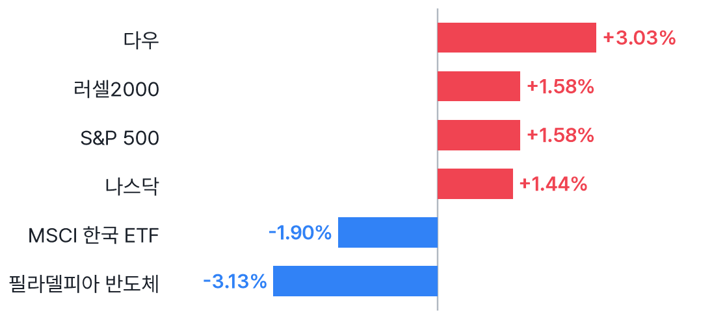
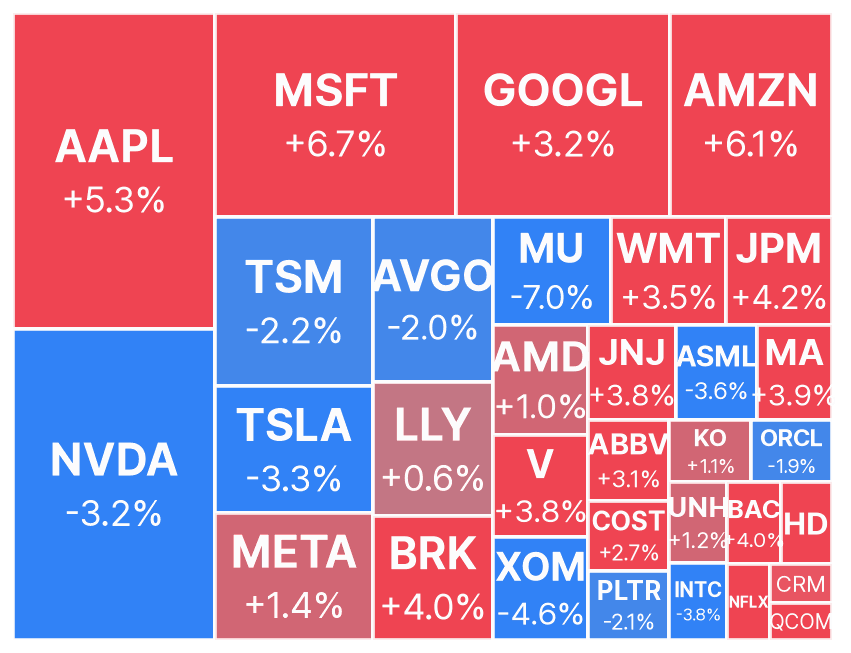
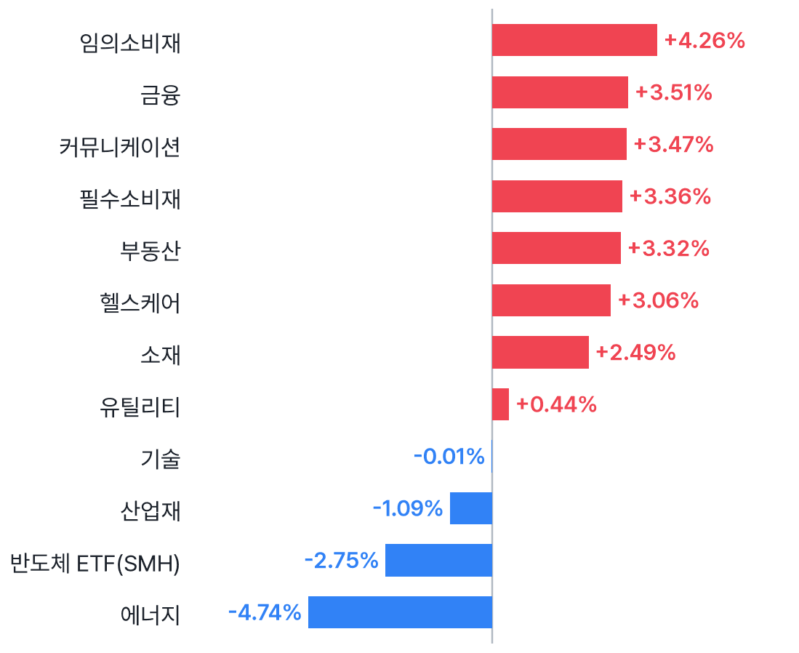
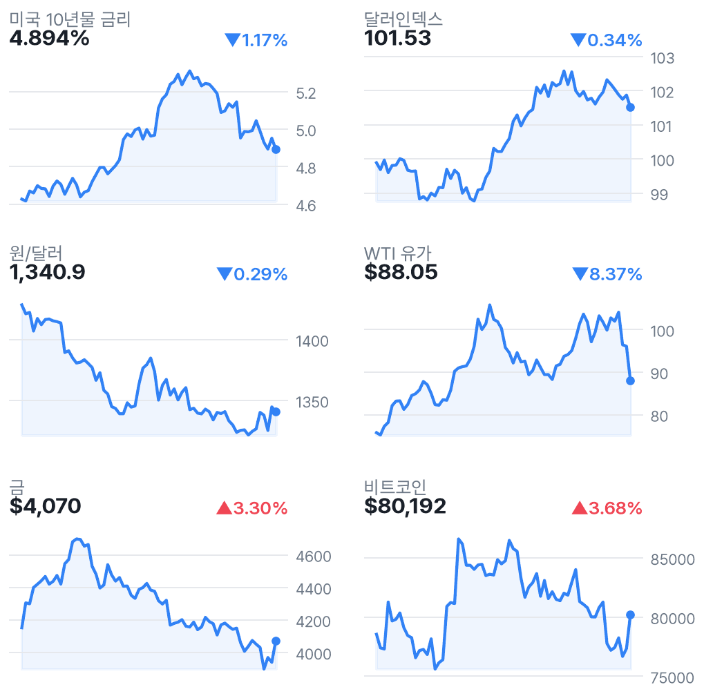
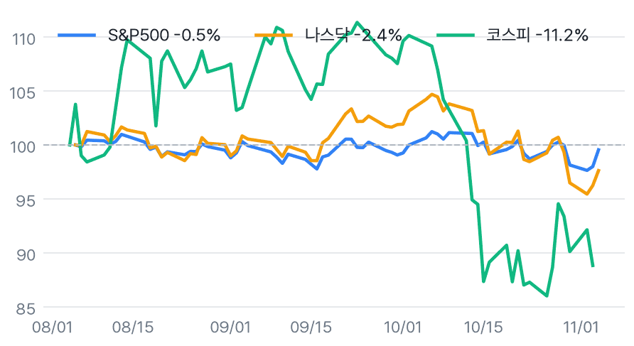

다우 3.03%↑, 선거 불확실성 완화…반도체는 약세
✅ 핵심 요약
- 다우 +3.03%·나스닥 +1.44%: 선거 불확실성 완화에 안도 랠리.
- WTI -8.37%: 종전 기대 관련 보도, 전쟁 종료 확정으로 해석은 금물.
- 반도체 -3.13%·MU -7.00%: 데이터센터 기대 약화·AI 규제 경계.
- EWY -1.90%·원/달러 1,340.9원: 환율 개선과 반도체 부담 교차.
📊 주요 지표
S&P 500
7,688.62
▲1.58%
나스닥
25,736.51
▲1.44%
다우
53,356.12
▲3.03%
필라델피아 반도체
10,268.65
▼3.13%
VIX
16.61
▼20.26%
미국 10년물
4.894%
▼1.17%
원/달러
1,340.9
▼0.29%
달러인덱스
101.53
▼0.34%
WTI
$88.05
▼8.37%
금
$4,070
▲3.30%
비트코인
$80,192
▲3.68%
EWY(한국 ETF)
$152.12
▼1.90%
🧭 시장 해석
민주당의 상·하원 승리 이후 선거 불확실성 해소와 분점정부 기대가 안도 랠리를 이끌었다. 다우 +3.03%, 금융 +3.51%·임의소비재 +4.26%로 상승이 확산됐다. 유가 하락과 금리 하락도 동반됐다.
국내에는 유가·달러 하락이 비용 부담 완화 요인이지만, 반도체 -3.13%·EWY -1.90%가 부담이다. 미국 지수 상승을 국내 반도체 전반의 반등으로 해석하기 어렵다. 국내 전일 지수는 최신 네이버 마감치를 기준으로 봐야 한다.
지수 안도 랠리와 AI 반도체 약세의 공존
MarketWatch는 선거 결과가 데이터센터 낙관론을 흔들었다고 보도했고, 유안타증권은 AI 규제 우려를 제기했다. 엔비디아 -3.17%, 마이크론 -7.00%, ASML -3.60%로 약세가 이어졌다. 반면 MS +6.68%·아마존 +6.12%로 빅테크도 갈렸다. 실제 규제 시행이 확인된 것은 아니다.
유가 급락은 종전 기대의 가격 반영
WTI는 $88.05로 -8.37%, 에너지 ETF는 -4.74%였다. 수집된 아시아경제 헤드라인은 전쟁 종료 기대를 유가 하락의 배경으로 제시했다. 이는 기대에 대한 보도이지 전쟁 종료 확인이 아니다. 국내 운송·소비 업종의 비용 개선 가능성과 정유·에너지 업종의 부담을 나눠 볼 필요가 있다.
📈 차트
미국 주요 지수 등락률

2026-11-04 미국 정규장 종가 기준 · EWY는 코스피 선행 지표로 참고
미국 빅테크·대형주 히트맵

타일 크기 = 시가총액, 색 = 등락률 (빨강 상승 · 파랑 하락)
미국 섹터 ETF 등락률

SPDR 섹터 ETF + 반도체(SMH)
금리·환율·원자재 (3개월)

우측 상단 = 전일 대비
3개월 추세 비교 (시작=100)

미국 vs 한국 지수 흐름
🏦 애널리스트 · 리서치
- AMD — Piper Sandler 목표가 $600→$650 상향Overweight 유지. 반도체 약세 속에서도 AMD는 +1.01%로 차별화됐다.
- AMD — Mizuho 목표가 $705→$610 하향Outperform 유지. 같은 종목에서도 목표가 방향이 엇갈려 기대치 분산에 유의할 대목.
-
실적과 성장 포인트가 차별화된다는 의견. 미국 반도체 약세와 개별 실적 평가는 구분해야 한다.
-
수익성 확보가 핵심이라는 의견. 수요 회복뿐 아니라 이익 전환의 지속성 확인에 초점.
미국 대형주 의견·목표가 변경 15건 (Yahoo)
- 목표가 하향AAPL · JP MorganOverweight · 목표가 $360 → $355 · 11/04 03:16 KST
- 목표가 상향AMD · JP MorganNeutral · 목표가 $550 → $575 · 11/05 04:22 KST
- 목표가 상향AMD · Morgan StanleyEqual-Weight · 목표가 $510 → $550 · 11/05 02:29 KST
- 목표가 상향AMD · Piper SandlerOverweight · 목표가 $600 → $650 · 11/05 02:06 KST
- 목표가 하향AMD · Wells FargoOverweight · 목표가 $700 → $650 · 11/05 01:44 KST
- 목표가 상향AMD · Truist SecuritiesBuy · 목표가 $594 → $605 · 11/05 00:44 KST
- 목표가 상향AMD · DA DavidsonBuy · 목표가 $550 → $600 · 11/04 22:28 KST
- 목표가 하향AMD · MizuhoOutperform · 목표가 $705 → $610 · 11/04 21:26 KST
- 목표가 상향AMD · StifelBuy · 목표가 $700 → $725 · 11/04 20:51 KST
- 목표가 하향AMD · B of A SecuritiesBuy · 목표가 $720 → $650 · 11/04 20:28 KST
- 목표가 상향AMZN · Freedom BrokerBuy · 목표가 $255 → $330 · 11/04 04:59 KST
- 목표가 상향PLTR · BarclaysOverweight · 목표가 $265 → $273 · 11/05 03:41 KST
- 목표가 상향PLTR · CitigroupBuy · 목표가 $250 → $265 · 11/04 03:54 KST
- 목표가 상향XOM · CitigroupNeutral · 목표가 $155 → $175 · 11/05 06:16 KST
- 목표가 상향XOM · TD CowenBuy · 목표가 $180 → $193 · 11/05 04:16 KST
국내 종목분석 리포트 30건 (네이버 리서치)
-
한화투자증권 · 2026-11-04
-
키움증권 · 2026-11-04
-
키움증권 · 2026-11-04
-
키움증권 · 2026-11-04
-
키움증권 · 2026-11-04
-
키움증권 · 2026-11-04
-
키움증권 · 2026-11-04
-
대신증권 · 2026-11-04
-
대신증권 · 2026-11-04
-
대신증권 · 2026-11-04
-
대신증권 · 2026-11-04
-
대신증권 · 2026-11-04
-
대신증권 · 2026-11-04
-
대신증권 · 2026-11-04
-
대신증권 · 2026-11-04
-
대신증권 · 2026-11-04
-
대신증권 · 2026-11-04
-
한화투자증권 · 2026-11-04
-
한화투자증권 · 2026-11-04
-
한화투자증권 · 2026-11-04
-
한화투자증권 · 2026-11-04
-
한화투자증권 · 2026-11-04
-
한화투자증권 · 2026-11-04
-
DS투자증권 · 2026-11-04
-
DS투자증권 · 2026-11-04
-
교보증권 · 2026-11-04
-
교보증권 · 2026-11-04
-
교보증권 · 2026-11-04
-
하나증권 · 2026-11-04
-
하나증권 · 2026-11-04
국내 투자전략 리포트 8건 (네이버 리서치)
-
키움증권 · 2026-11-04
-
키움증권 · 2026-11-04
-
대신증권 · 2026-11-04
-
대신증권 · 2026-11-04
-
신한투자증권 · 2026-11-04
-
DS투자증권 · 2026-11-04
-
하나증권 · 2026-11-04
-
유안타증권 · 2026-11-04
국내 시황정보 리포트 8건 (네이버 리서치)
-
유안타증권 · 2026-11-04
-
신한투자증권 · 2026-11-04
-
유안타증권 · 2026-11-04
-
유안타증권 · 2026-11-04
-
신한투자증권 · 2026-11-04
-
다올투자증권 · 2026-11-04
-
신한투자증권 · 2026-11-04
-
iM증권 · 2026-11-04
국내 경제분석 리포트 4건 (네이버 리서치)
-
키움증권 · 2026-11-04
-
대신증권 · 2026-11-04
-
iM증권 · 2026-11-04
-
신한투자증권 · 2026-11-04
📰 주요 뉴스
-
지수 상승과 AI 반도체 약세가 공존한 배경.WSJ Markets
-
국내 메모리·장비주에 대한 개장 전 경계 요인.MarketWatch
-
수집 시점 시간외 -4.73%; 정규장 상승과 구분.CNBC
-
AI 성장률뿐 아니라 투자 비용·수익성 검증도 중요.CNBC
미국·글로벌 헤드라인 18건
-
CNBC · 11/05 07:00
-
MarketWatch · 11/05 06:55
-
MarketWatch · 11/05 06:55
-
WSJ Markets · 11/05 06:55
-
CNBC · 11/05 06:50
-
CNBC · 11/05 06:48
-
MarketWatch · 11/05 06:48
-
CNBC · 11/05 06:38
-
CNBC · 11/05 06:36
-
CNBC · 11/05 06:36
-
MarketWatch · 11/05 06:33
-
MarketWatch · 11/05 06:33
-
CNBC · 11/05 06:32
-
WSJ Markets · 11/05 06:32
-
MarketWatch · 11/05 06:30
-
MarketWatch · 11/05 06:29
-
NBC News · 11/05 06:23
-
WSJ Markets · 11/05 06:21
국내 헤드라인 18건
-
매일경제 · 11/05 06:51
-
연합뉴스TV · 11/05 06:50
-
아시아경제 · 11/05 06:45
-
글로벌이코노믹 · 11/05 06:42
-
KBS 뉴스 · 11/05 06:38
-
연합뉴스 · 11/05 06:31
-
한국경제 · 11/05 06:30
-
이투데이 · 11/05 06:27
-
매일경제 · 11/05 06:21
-
뉴스핌 · 11/05 06:19
-
서울신문 · 11/05 06:13
-
연합인포맥스 · 11/05 06:13
-
매일경제 · 11/05 06:07
-
이투데이 · 11/05 06:07
-
연합뉴스 · 11/05 06:05
-
블루밍비트 · 11/05 06:03
-
매일경제 · 11/05 06:03
-
연합뉴스 · 11/05 06:01
애널리스트 관련 헤드라인 12건
-
MarketBeat · 11/05 06:21
-
MarketBeat · 11/05 04:32
-
MarketBeat · 11/05 04:22
-
TradingView · 11/05 03:49
-
MarketBeat · 11/05 03:24
-
MarketBeat · 11/05 03:22
-
MarketBeat · 11/05 03:14
- LUNR Stock Gets A Price Target Cut Ahead Of Q3 Report – Here’s What The Analyst Said About ValuationStocktwits · 11/05 02:45
-
Benzinga · 11/05 02:38
-
Benzinga · 11/05 02:04
-
Benzinga · 11/05 02:00
-
Yahoo Finance · 11/04 23:43
🗓️ 일정
경제지표·이벤트 (KST)
- 00:00🇺🇸 미국 ISM Services PMI11/05 · 중요도 중간 · 예상 54.8 · 이전 54.9
- 22:30🇺🇸 미국 Unemployment Claims11/05 · 중요도 중간 · 예상 197K · 이전 194K
어젯밤 장 마감 후 실적 (미국)
- TM Toyota Motor Corp Ltd Ord시간미정시총 $251.6B · EPS 예상 - · 시간외 ▼0.00%
- ARM Arm Holdings plc장후시총 $215.5B · EPS 예상 $0.22 · 시간외 ▼1.13%
- QCOM QUALCOMM Incorporated장후시총 $172.7B · EPS 예상 $1.46 · 시간외 ▼4.73%
- MCK McKesson Corporation장후시총 $116.5B · EPS 예상 $10.69 · 시간외 ▼0.84%
- MELI MercadoLibre, Inc.장후시총 $84.3B · EPS 예상 $9.41 · 시간외 ▼6.60%
- APP Applovin Corporation장후시총 $82.2B · EPS 예상 $3.94 · 시간외 ▲19.96%
- MSI Motorola Solutions, Inc.장후시총 $81.3B · EPS 예상 $3.99 · 시간외 ▼2.05%
- MFC Manulife Financial Corp장후시총 $74.8B · EPS 예상 $0.83 · 시간외 ▲0.35%
다음 미국 세션 실적 예정
- COP ConocoPhillips장전시총 $173.5B · EPS 예상 $3.06
- SONY Sony Group Corporation장전시총 $149.7B · EPS 예상 $0.38
- MNST Monster Beverage Corporation장후시총 $138.6B · EPS 예상 $0.30
- PH Parker-Hannifin Corporation장전시총 $119.2B · EPS 예상 $8.23
- CNQ Canadian Natural Resources Limited장전시총 $110.7B · EPS 예상 $1.05
- SO Southern Company (The)장전시총 $107.8B · EPS 예상 $1.71
- ABNB Airbnb, Inc.장후시총 $100.0B · EPS 예상 $2.86
- DUK Duke Energy Corporation장전시총 $98.6B · EPS 예상 $1.87
- NET Cloudflare, Inc.장후시총 $97.4B · EPS 예상 $0.02
- EOG EOG Resources, Inc.장후시총 $81.4B · EPS 예상 $4.45
- CI The Cigna Group장전시총 $78.1B · EPS 예상 $7.46
- SPG Simon Property Group, Inc.장후시총 $71.9B · EPS 예상 $3.32
- APD Air Products and Chemicals, Inc.장전시총 $69.7B · EPS 예상 $3.60
- CMI Cummins Inc.장전시총 $68.9B · EPS 예상 $8.38
👀 체크포인트
- 오늘 국내장EWY -1.90%·미 반도체 -3.13%의 영향과 외국인 수급 확인
- 22:30미국 신규 실업수당 청구: 예상 197K, 이전 194K
- 오늘 미 장전ConocoPhillips·Sony 실적 예정; 유가 급락 이후 전망 확인
- 내일 새벽Airbnb·Cloudflare 실적: 미국 11/05 장후 발표 예정